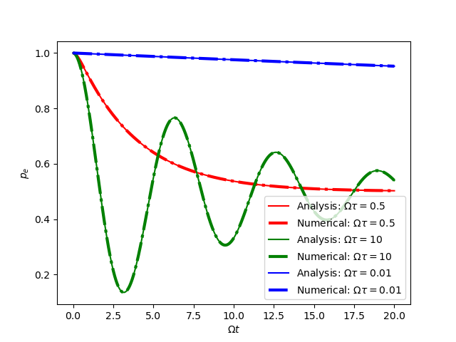

开放系统读书会：非选择测量，连续测量，量子芝诺效应
直接连续测量的量子芝诺效应（The Quantum Zeno Effect）
量子芝诺效应的名字起源于经典的芝诺悖论。芝诺悖论提出：一个飞行中的箭矢在任意一个 时刻都是静止在空中的，所以它不可能处于运动状态。 (see Wikipedia: 量子芝诺效应)
考虑分立的非简并的测量
$$\begin{align} A = \sum_n a_n |\psi_n\rangle \langle \psi_n| \end{align}$$我们每间隔时间 $\theta$ 就测一下。在两次测量之间，系统由薛定谔方程演化
$$\begin{align} \mathrm{i}\frac{\partial}{\partial t}|\psi(t)\rangle = H |\psi(t)\rangle \end{align}$$在 $\theta\to 0$ 的极限下，就叫做可观测量 $A$ 的连续测量。 现在假设系统的初态是 $A$ 的一个本征态
$$\begin{align} |\psi(0)\rangle = |\psi_n\rangle \end{align}$$经过很短的时间 $\theta$ 后，测量一下
$$\begin{align} \langle\psi(\theta)|A|\psi(\theta)\rangle = \sum_m a_m |\langle\psi(\theta)|\psi_m\rangle|^2 \equiv \sum_n a_m \omega_{mn}(\theta) \end{align}$$也就是说，测量结果是 $a_m$ 的概率为 $\omega_{mn}$ 。 那么测量结果是 $a_n$ ，也就是系统仍处于与初态相同的本征态上的概率为 $\omega_{nn}$ 。 系统的在很短时间内的演化可以将演化算符级数展开，只考虑前几阶
$$\begin{align} |\psi(t)\rangle = \left[ I - \mathrm{i} H t - \frac{1}{2}H^2 t^2 + \cdots \right] |\psi_n\rangle \end{align}$$由此可以得到 $\omega_{nn}$ 短时极限下的行为
$$\begin{align} \omega_{nn} = 1 - (\Delta E)_n^2\theta^2 + \cdots \end{align}$$$(\Delta E)_n^2$ 为能量的方差，也就是能量的不确定度
$$\begin{align} (\Delta E)_n^2 = \langle\psi_n| H^2 | \psi_n\rangle - \langle\psi_n| H | \psi_n\rangle^2 \end{align}$$在经过一段时间 $\tau = k\theta$ 后，我们经过了 $k$ 次测量，那么，系统仍处于与初态相同 的本征态上的概率为（在连续测量，即 $\theta = \tau/k \to 0$ ，的极限下）
$$\begin{align} \omega_{nn}(\tau) \approx \left[ 1 - (\Delta E)_n^2 \frac{\tau \theta}{k} \right]^k \approx e^{- (\Delta E)_n^2 \tau \theta} \to 1 \end{align}$$也就是说，如果系统处于测量的一个本征态上，在连续测量极限下，系统会一直处在这个本 征态上。此即量子芝诺效应。形式上的原因是：离开初态本征态的概率 $1-\omega_{nn}(\theta)\propto \theta^2$ ，而测量次数的增加正比与 $\theta^{-1}$ 。
间接连续测量的有效主方程
间接测量是使一个探测粒子（probe particle）与被测粒子（object）耦合，
$$\begin{align} H_I (t) = g(t) AQ \end{align}$$$Q$ 是 probe particle 的物理量，$A$ 是我们想要测量的 object 的 可观测量。我们实际测量的是 probe particle 的与 $Q$ 共轭的物理量 $P$ 。 换句话将，我们通过实际测量 probe particle 的 $P$ ， 来间接的测量 object 的 $A$ 。 $g(t)$ 是耦合强度。
假设我们的 probe particle 处于与 object 初态相同的态（ $t$ 时刻） $|\phi_{\theta}\rangle$ 上， 即 $\rho_P(t) = |\phi_{\theta}\rangle\langle\phi_{\theta}|$ 。并且，在短时 间内，probe particle 主要由 $H_I(t)$ 来演化，那么我们对 probe particle 测量 $P$
$$\begin{align} \langle p| e^{-\mathrm{i}\int \mathrm{d}t \cdot H_I(t)}|\phi_{\theta}\rangle \equiv \langle p| e^{-\mathrm{i}GAQ}|\phi_{\theta}\rangle \end{align}$$$|p\rangle$ 是 $P$ 的本征态。还定义了演化的时常 $G=\int \mathrm{d}t g(t) = \theta$ 。 object 在 $t+\theta$ 时刻的密度矩阵为
$$\begin{align} \rho(t + \theta) =& \mathrm{Tr}_P \left[ U \cdot\rho_O(t) \otimes \rho_P(t) \cdot U^{\dagger} \right]\\ =& \mathrm{Tr}_P \left[ \int \mathrm{d}p\cdot |p\rangle\langle p| \cdot U \cdot\rho_O(t) \otimes \cdot |\phi_{\theta}\rangle\langle\phi_{\theta}| U^{\dagger} \right] \\ =&\int \mathrm{d}p\cdot \mathrm{Tr}_P \left[ |p\rangle\langle p| \cdot U \cdot\rho_O(t) \otimes \cdot |\phi_{\theta}\rangle\langle\phi_{\theta}| U^{\dagger} \right] \\ =&\int \mathrm{d}p\cdot \langle p| U |\phi_{\theta}\rangle\cdot\rho_O(t) \otimes \cdot \langle\phi_{\theta}| U^{\dagger}|p\rangle \\ =&\int \mathrm{d}p\cdot \Omega_p \rho_O(t) \otimes \Omega_p^{\dagger} \end{align}$$其中 $\mathrm{Tr}_P$ 是对 probe particle 求偏迹，把 probe particle 求迹掉。
$$\begin{align} \Omega_p\equiv \langle p| U |\phi_{\theta}\rangle = e^{-\mathrm{i} H\theta}\langle p| e^{-\mathrm{i}AQ\theta}|\phi_{\theta}\rangle \end{align}$$对 $\theta$ 做展开，保留到相干部分的一阶项，非相干部分的二阶项
$$\begin{align} \rho(t + \theta) = \rho(t) - \mathrm{i}[H, \rho(t)]\theta - i[A, \rho(t)]\langle Q\rangle_{\theta}\theta + \left[ A \rho(t) A - \frac{1}{2} A^2 \rho(t) - \frac{1}{2} \rho(t) A^2 \right] \langle Q^2\rangle_{\theta} \theta^2 \end{align}$$其中
$$\begin{align} \langle Q\rangle_{\theta} = \langle\phi_{\theta} | Q |\phi_{\theta}\rangle, \quad \langle Q^2\rangle_{\theta} = \langle\phi_{\theta} | Q^2 |\phi_{\theta}\rangle \end{align}$$假设 $\langle Q\rangle_{\theta} = 0$ ，且下列极限存在
$$\begin{align} \sigma^2_Q \equiv \lim_{\theta\to 0} \theta\langle Q^2\rangle_{\theta} \end{align}$$所以在连续测量极限下，我们得到量量间接测量对 object 的影响，object 的演化是标准 主方程的形式
$$\begin{align} \frac{\mathrm{d}}{\mathrm{d} t}\rho(t) = -\mathrm{i}[H, \rho(t)] + \sigma_Q^2 A \rho(t) A - \frac{1}{2}\sigma_Q^2\{ A^2, \rho(t) \}] \end{align}$$间接连续测量的量子芝诺效应
如果我们定义
$$\begin{align} \sigma_A^2 = \lim_{\theta\to 0} \frac{\langle P^2\rangle_{\theta}}{\theta} \end{align}$$那么有不确定度关系（ $P, Q$ 是共轭的量）
$$\begin{align} \sigma_A^2 \cdot \sigma_Q^2 = \langle P^2\rangle_{\theta} \langle Q^2\rangle_{\theta} \ge \frac{1}{4} \end{align}$$$\sigma_A^2$ 可以作为测量 $A$ 的不确定度。可以发现，想要 $A$ 测得越准确，那么 $\sigma_Q^2$ 就要更大，也就是测量对 object 带来的反作用就更大。我们定义芝诺时间 $\tau_0$
$$\begin{align} \tau_0 \equiv [\sigma^2_Q]^{-1} \end{align}$$$\tau_0$ 越小，$\sigma_A^2$ 就越小，测量就越精确，同时，测量对 object 的反作用就越大。 当 $\tau\to 0$ 时，就会产生量子芝诺效应，即，object 会一直处于初态上。从主方程看， $\tau\to 0$ 时， $\sigma_Q^2$ 很大，么正演化可以忽略，而增大 $\sigma_Q^2$ 等效于把时间拉长 （主方程两边同时除以 $\sigma_Q^2$ ），也就是粒子会处于初态上迟迟不肯离开。
例子演示：二能级系统
考虑二能级系统拉比振荡，测量量选为Pauli 矩阵第三个，即 $A= \sigma_{3}$ (也就是 $\sigma_z$)。 那么等效的主方程为
$$\begin{align} \frac{\mathrm{d}}{\mathrm{d}t} \rho(t) = -\mathrm{i} [-\frac{\Omega}{2}\sigma_1, \rho(t)] - \frac{1}{2\tau_0}[\sigma_3, [\sigma_3, \rho(t)]] \end{align}$$下面给出数值解和解析解的结果（初态选为激发态）。
import qutip as qtp
import matplotlib.pyplot as plt
import numpy as np
def num_pe(tlist, tau, rho0=qtp.fock_dm(2, 0)):
res = qtp.mesolve(H=-1/2*qtp.sigmax(), rho0=rho0, tlist=tlist,
c_ops=1/np.sqrt(tau)*qtp.sigmaz(),
e_ops=qtp.fock_dm(2, 0))
return res.expect[0]
def ana_pe(t, tau):
if tau > 1:
nu = np.sqrt(1 - 1/tau**2)
s3 = (np.cos(nu*t) + np.sin(nu*t)/(nu*tau)) * np.exp(-t/tau)
else:
mu1 = 1/tau + np.sqrt(1/tau**2 - 1)
mu2 = 1/tau - np.sqrt(1/tau**2 - 1)
s3 = (mu2*np.exp(-mu1*t) - mu1*np.exp(-mu2*t)) / (mu2-mu1)
return (1+s3) / 2
tau = .1
tlist = np.linspace(0, 20, 5000)
plt.plot(tlist, ana_pe(tlist, tau=.5), label=r'Analysis: $\Omega\tau=0.5$',
ls='-', color='red')
plt.plot(tlist, num_pe(tlist, tau=.5), label=r'Numerical: $\Omega\tau=0.5$',
ls='-.', lw=3, color='red')
plt.plot(tlist, ana_pe(tlist, tau=10), label=r'Analysis: $\Omega\tau=10$',
ls='-', color='green')
plt.plot(tlist, num_pe(tlist, tau=10), label=r'Numerical: $\Omega\tau=10$',
ls='-.', lw=3, color='green')
plt.plot(tlist, ana_pe(tlist, tau=.01), label=r'Analysis: $\Omega\tau=0.01$',
ls='-', color='blue')
plt.plot(tlist, num_pe(tlist, tau=.01), label=r'Numerical: $\Omega\tau=0.01$',
ls='-.', lw=3, color='blue')
plt.xlabel(r'$\Omega t$')
plt.ylabel(r'$p_e$')
plt.legend()
plt.savefig('quantum_Zeno.png', transparent=True)
在 $\Omega \tau_0 > 1$ 时，是振荡衰减的。在 $\Omega \tau_0 < 1$ 时没有振荡，只有衰减。 在 $\Omega \tau_0 \to 0$ 时，一直处于初态，即量子芝诺效应。
Reference
- QuTiP Documents
- Breuer, H.-P. & Petruccione, F. The theory of open quantum systems. (Clarendon Press, 2009). Chap 3.5
- Wikipedia: 量子芝诺效应
- Wikipedia: Quantum Zeno effect